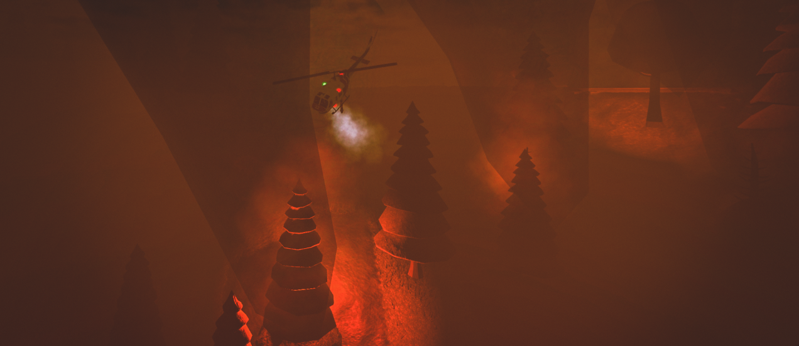
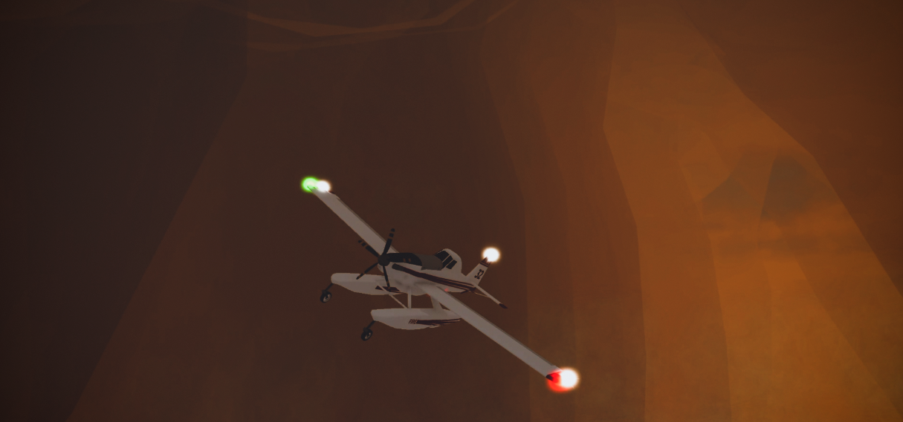

Exams
Rotary Wing
Stage 1 (Fine Control)
Attachment of tank in under 20s
Refill of water in training pond in under 70s
Drop of 50% or less of tank on phoscheck line created by helitack radio
Drop of 50% or remaining amount in tank on propane tank
Landing and opening doors
60s in hover pit without touching walls
Stage 2 (Strategy)
Plan for a given fire spawn
Part of or full solo containment of a fire
You may change your plan during the fire but you must let the instructor know of those changes
Strategy will be assessed by quality of plan and execution of it
Ability to create a line will be assessed
Drop quality will be assessed

Fixed Wing
Stage 1 (Drops & Basics)
Appropriate taxi and takeoff
Drop of phoscheck on side of fire chosen by instructor
Drop of water on side of fire chosen by instructor
Landing at Buffalo Airstrip
Stage 2 (Strategy)
Plan for a given fire spawn
Part of or full solo containment of a fire
You may change your plan during the fire but you must let the instructor know of those changes
Strategy will be assessed by quality of plan and execution of it
Ability to create a line will be assessed
Drop quality will be assessed
